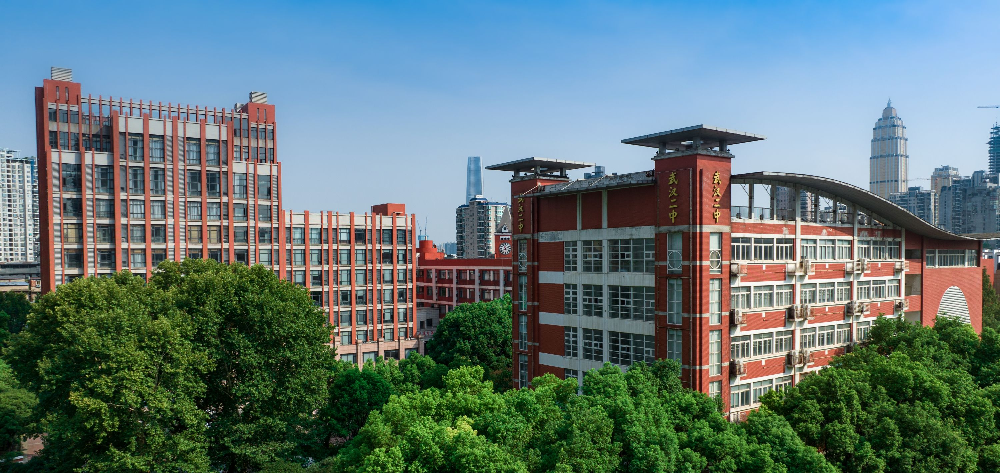

我的时光：武汉的公园与校园印记
公园童年

汉口江滩：浪花里的周末
小时候总盼着和爸妈去江滩，爸爸骑车带我和妈妈，一路都是欢声笑语。我光着脚踩沙追浪，妈妈铺野餐垫摆零食，爸爸用芦苇编小蚂蚱给我玩。
傍晚吹着江风散步，看夕阳染红河面，回家时还能买到冰凉的绿豆冰棒，甜丝丝的味道记到现在。

解放公园：樱花下的快乐
春天的公园满是樱花，爸妈带我拍照、喂鸽子，鸽子落在手心啄食时，痒痒的我直笑。我们还租脚踏船游湖，爸爸蹬船，妈妈给我剥瓜子，特别惬意。
夏天傍晚，跟着广场舞音乐和爸妈瞎晃，回家趴在爸爸背上，闻着草木香就能睡着。

东湖：秋日的骑行时光
每年秋天和爸妈去东湖骑行，三人自行车载着我们慢悠悠逛绿道，路边桂花香飘老远。妈妈捡桂花放我口袋，爸爸给我讲嫦娥的故事。
我们在草地搭帐篷、捡松果，吃着妈妈做的三明治，阳光暖洋洋的，是童年最舒服的时光。
校园岁月

长春街小学：懵懂的童年时光
小学时光在长春街小学度过，校门口的早点摊是每天的期待，妈妈总给我买热干面或面窝，热乎乎的吃完整天有精神。
课间和同学在操场捉迷藏，放学后排队出校门，总能在人群里找到等我的妈妈。校园里的梧桐树，夏天枝叶繁茂，是我们乘凉打闹的小天地。
武汉二中广雅中学：青涩的少年时代
初中就读于广雅，校园里的老教学楼满是书卷气。每天早读课朗朗书声，晚自习后和同学结伴回家，路灯拉长我们的影子，聊着习题和心事。
傍晚时分，教室里还留着白日的余温。大家摊开练习册凑在一起对答案，有人咬着笔杆皱眉头，有人拍桌喊“这题我会”，讲题的声音混着翻书声，成了晚自习前热热闹闹的序曲。

银杏树
高考奋斗
同学情谊
武汉二中：奋斗的青春年华
高中考入武汉二中，校园里那棵高大的银杏是秋日限定美景，叶黄时课间十分钟，总能看到同学们围在树旁拍照留念。教室后墙的倒计时牌，记录着我们并肩奋斗的日子。
周末留校自习，爸妈会送来爱吃的水果和点心，叮嘱我劳逸结合。高考前的最后一次班会，大家互相加油打气，那些并肩前行的时光，成了青春里最珍贵的回忆。